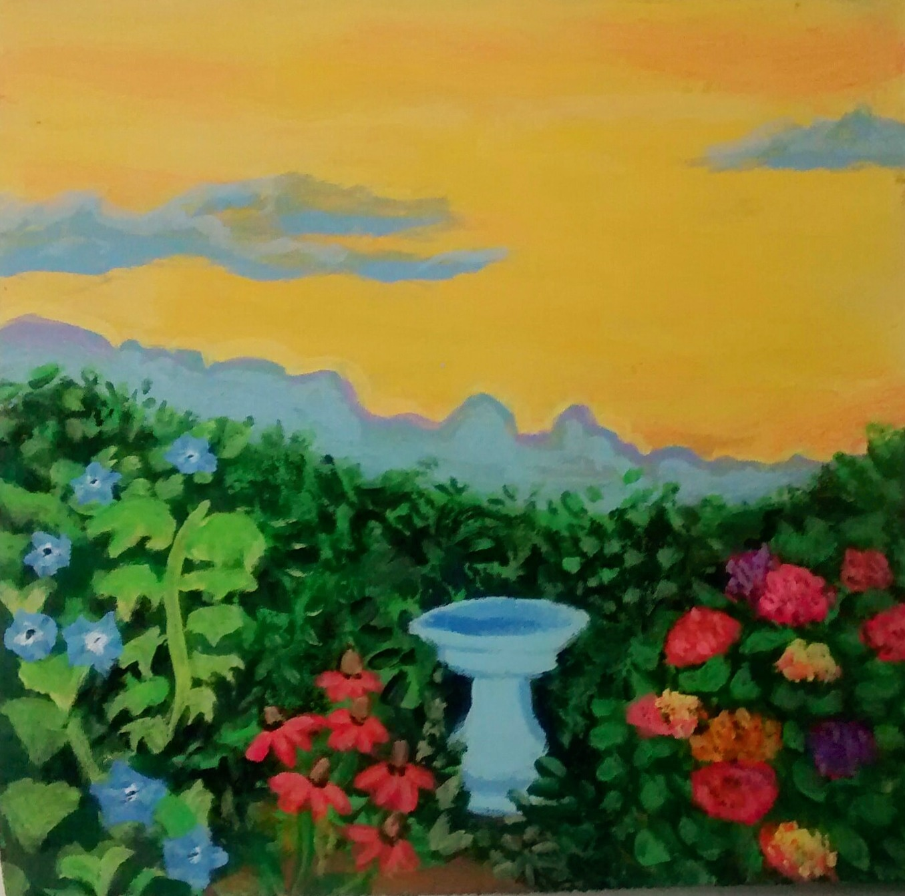
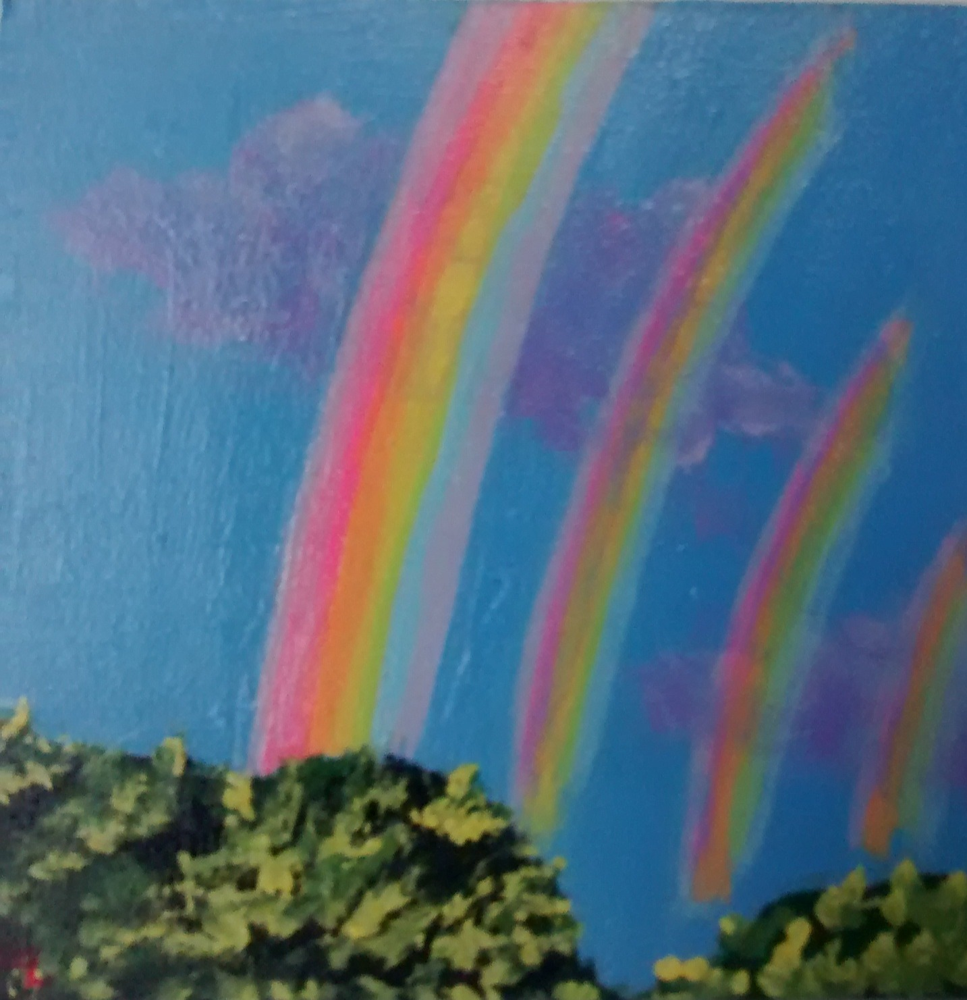
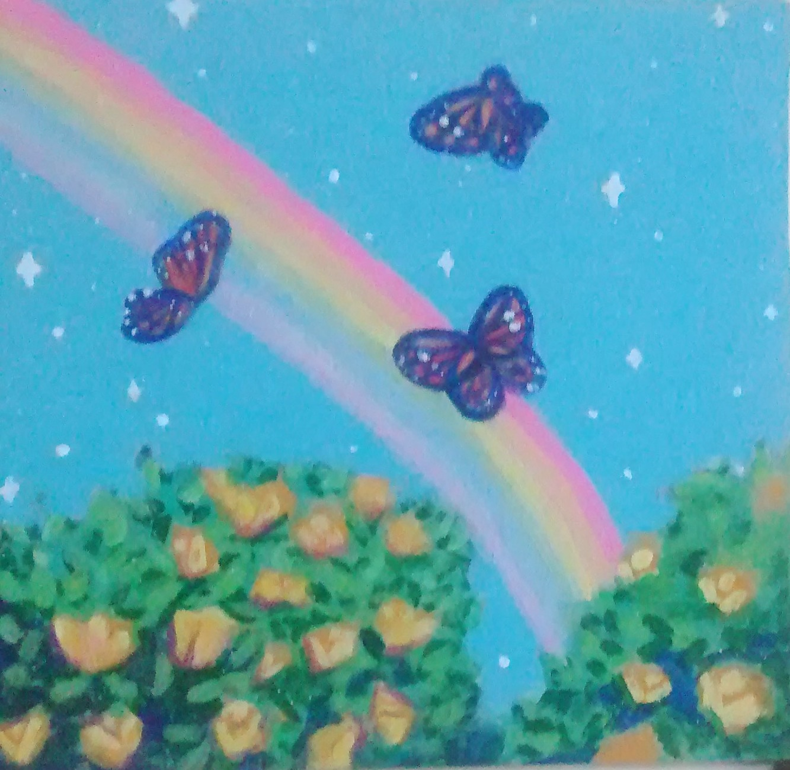
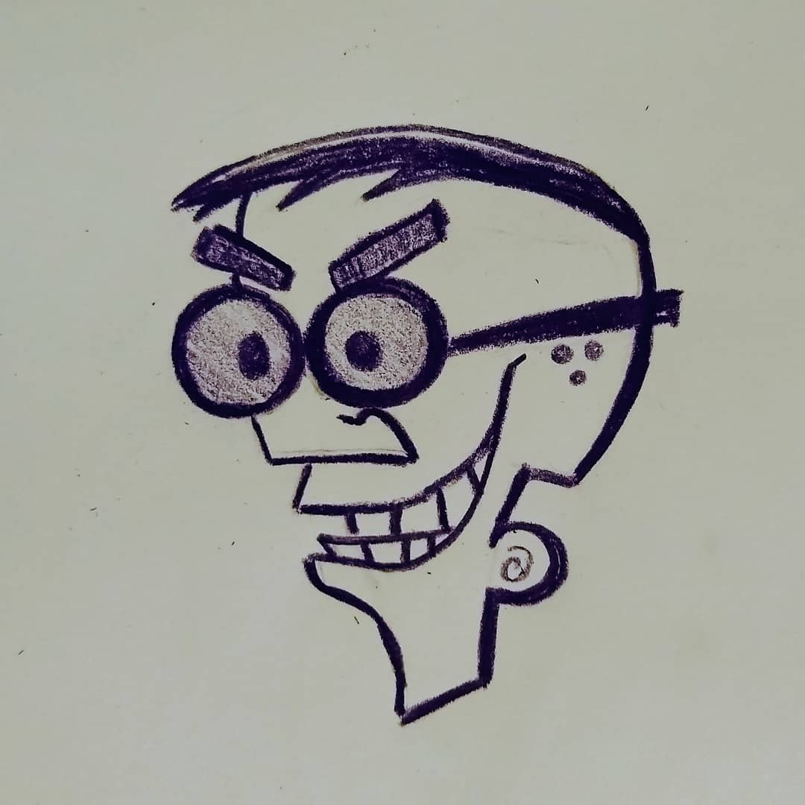
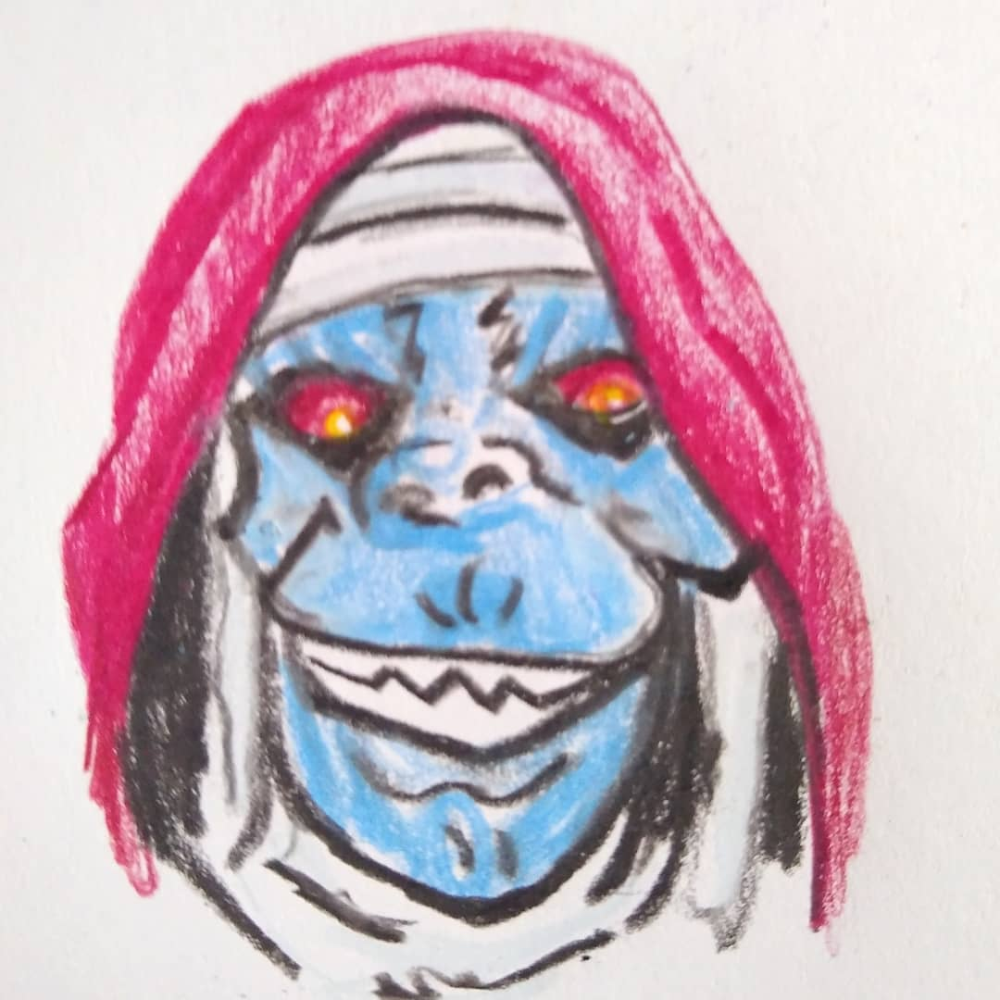
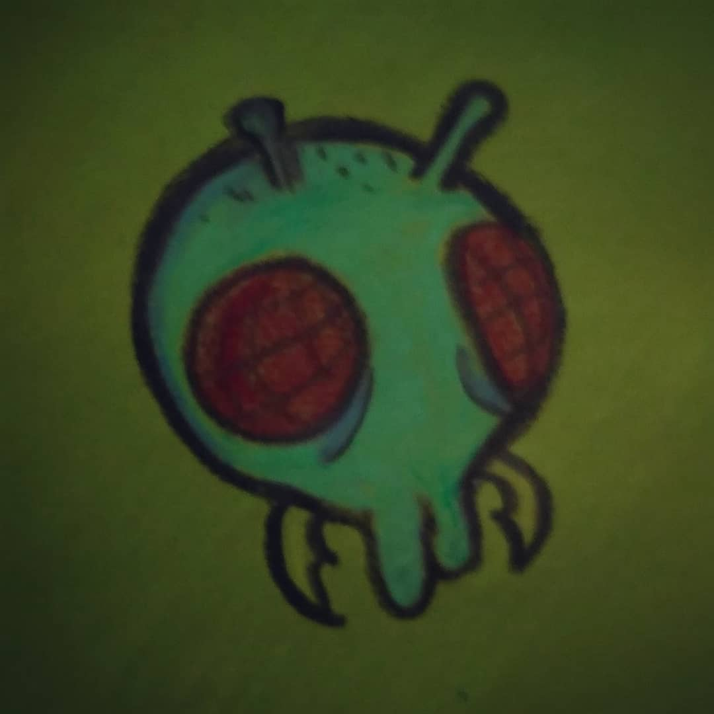
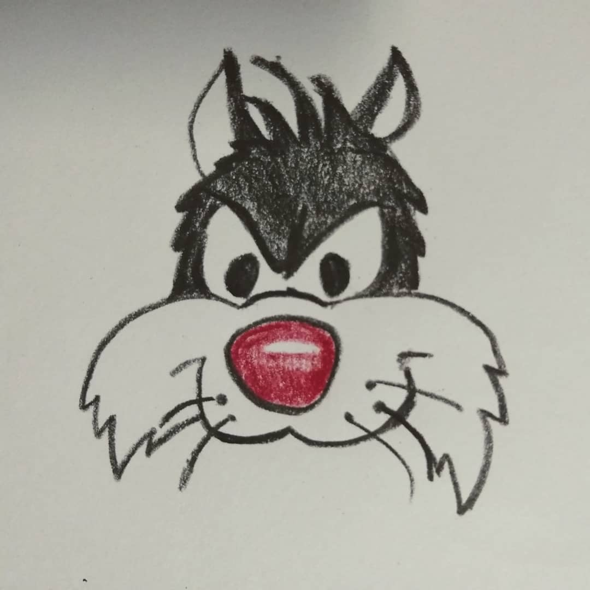

Title
Quaranteenie
4x4 Acrylic on MDF panel
About a week and a half into quarantine I started to get antsy, worried I would run out of paper/materials to paint on. So I dug out a large piece of MDF and decided to cut it down to smaller squares (4x4 was perfect). I cut them into squares to symbolize and represent window. To look into(or out) the window of whimsy and aesthetic to ease my mind during these confusing and uncertain times. I hope you find a bit of magic in each of these "windows" in my series Quaranteenie.



Foevember
Various Sizes/Mediums(mainly color pencil)
Everyday in the month of November I created a new drawing showcasing some of my favorite bad girls and guys. Foevember was created by @sornigrafix on instagram, cartoons are a huge past time for me so was very happy to participate in this challenge.





